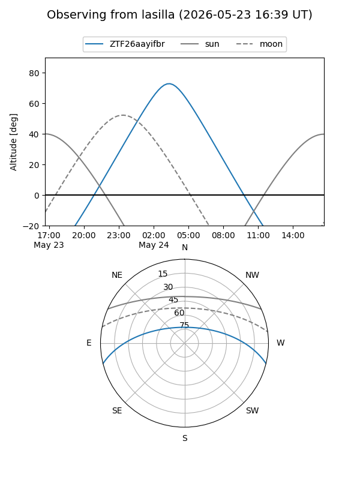
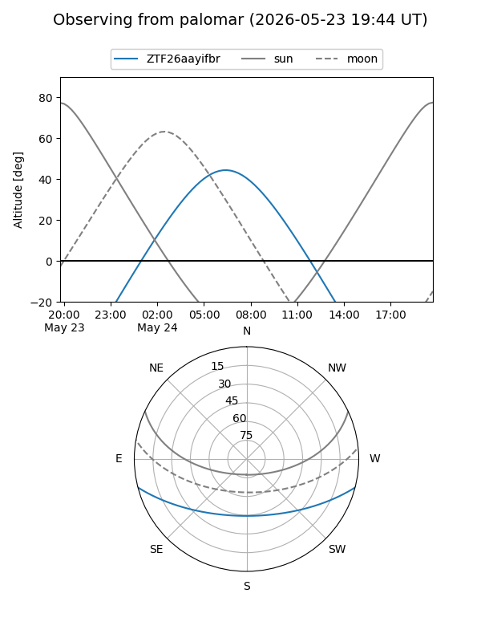

ZTF26aayifbr
Target ZTF26aayifbr at 2026-05-24 07:07
Aliases and brokers:
lsst-FINK: link
lsst-Lasair: link
lsst-ALeRCE: link
ztf-FINK: link
ztf-Lasair: link
ztf-ALeRCE: link
alt names
ZTF26aayifbr (ztf,fink_ztf)
Coordinates:
equatorial (ra, dec) = 220.5408,-12.09433
equatorial (HMS+DMS) = 14:42:09.80,-12:05:39.58
galactic (l, b) = (340.9367,+42.46134)
Flags:
Photometry:
last ztfg=19.46
1 ztfg detections
Lightcurve
Visibility


Additional plots